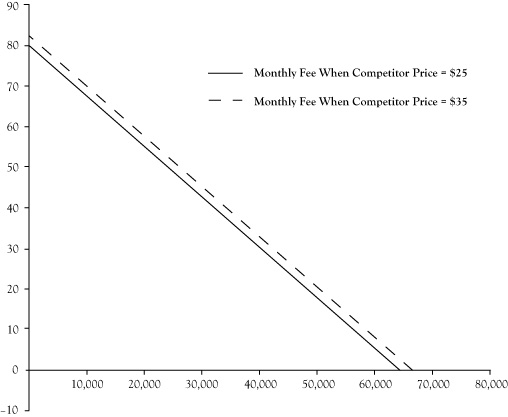

Decisions related to demand and pricing are usually called marketing decisions. Marketing is an established profession and an applied academic discipline with a large body of literature. However, economic reasoning and concepts provide much of the theoretical foundation for marketing practice. In this chapter, we will address these elements from the perspective of economics.
Back in Chapter 2 "Key Measures and Relationships", we used a demand curve to represent the relationship between the price charged for ice cream bars and the maximum number of ice cream bars that customers would purchase. We will address how to create a demand curve later in this chapter, but we will begin our discussion with a brief review of microeconomic theory that endeavors to explain how consumers behave.
A consumer is someone who makes consumption decisions for herself or for her household unit. In a modern society, consumption is largely facilitated by purchases for goods and services. Some of these goods and services are essential to a consumer’s livelihood, but others are discretionary, perhaps even a luxury. Consumers are limited in how much they can consume by their wealth. A consumer’s wealth will change over time due to income and expenditures. She might be able to borrow against future income so as to increase her capacity to purchase now in exchange for diminished wealth and consumption later. Similarly, she may retain some of her current wealth as savings toward increased future consumption. Consumption decisions may be planned into the future, taking account of the expected changes in wealth over time.
The theory of the consumerIndividuals plan their purchases, the timing of those purchases, and borrowing and saving so as to maximize the satisfaction that they and their household units will experience from consumption of goods and services. posits that a consumer plans her purchases, the timing of those purchases, and borrowing and saving so as maximize the satisfaction she and her household unit will experience from consumption of goods and services. In this theory, consumers are able to compare any two patterns of consumption, borrowing, and saving and deem that either one is preferred to the second or they are indifferent between the two patterns. Based on the ability to do these comparisons, consumers look at the prices charged for various services now, and what they expect prices to be for goods and services in the future, and select the pattern of consumption, borrowing, and saving that generates the greatest satisfaction over their lifetime within the constraint of their wealth and expected future income.
Although the consumers may anticipate changes in prices over time, they may find that their guesses about future prices are incorrect. When this happens, the theory states that they will adjust their consumption, borrowing, and saving to restore the optimality under the newly revealed prices. In fact, the theory identifies two effects of price changes: the substitution effect and the income effect.
The substitution effect is based on an argument employing marginal reasoning like the marginal analysis discussed in Chapter 2 "Key Measures and Relationships". Economists often use the term utilityA hypothetical quantitative value for satisfaction that a consumer receives from a pattern of consumption. as a hypothetical quantitative value for satisfaction that a consumer receives from a pattern of consumption. If a consumer were to receive one more unit of some good or service, the resulting increase in their utility is called the marginal utility of the goodThe increase in satisfaction that results from a consumer receiving one more unit of some good or service.. As a consequence of maximizing their overall satisfaction from consumption, or equivalently maximizing their utility, it will be the case that if you take the marginal utility of one good or service and divide it by its price, you should get the same ratio for any other good or service. If they were not roughly equal, the consumer would be able to swap consumption of one good or service for another, keep within their wealth constraint, and have higher utility. The substitution effectThe consumer's response to a change in the price of a good that restores the ratios of marginal utility to price for two goods to a state of balance. is the consumer’s response to a changing price to restore balance in the ratios of marginal utility to price.
Just as a simple illustration, suppose a consumer likes bananas and peaches as a treat. For the sake of the illustration, let’s suppose an additional banana has a marginal utility of 2 and a peach has a marginal utility of 3. If a banana costs $0.20 and a peach costs $0.30, bananas and peaches have a ratio of the marginal utility to its price equal to 10. If the peach price increases to $0.40, the ratio will become lower for peaches and the consumer may substitute some purchases of peaches with purchases of more bananas.
As the result of price changes and substitution, the consumer’s overall utility may increase or decrease. Consequently, the consumer may experience the equivalent of an increase or decrease in wealth, in the sense that it would have required a different level of wealth to just barely afford the new consumption pattern under the previous set of prices. This equivalent change in purchasing power is called the income effectThe change in the mix of goods and services that consumers can afford (that is, the change in wealth or purchasing power) when the price of a good changes..
Economists have precise techniques for separating the response to a price change into a substitution effect and an income effect.See Varian (1993) for a discussion of the substitution effect, income effect, and Giffen goods. This is beyond the scope of this text. For our purposes, it is sufficient to appreciate that price changes will affect the mix of goods and services that is best and change the consumer’s overall level of satisfaction.
In most cases, the primary response to a price change is a substitution effect, with a relatively modest income effect. However, for goods and services that a consumer cannot substitute easily, a sizeable price change may have a significant income effect. For example, when gasoline prices jumped dramatically in the United States, consumers may have reduced their driving somewhat but were unable to find a substitute for the essential needs served by driving their cars. As a result, consumers experienced a dramatic drop in wealth available for other goods and services and consumed generally less of all of those to compensate for the greater expenditure on gasoline.
Normally, price increases result in less consumption of the associated good or service, whereas price decreases results in more consumption. This typical pattern is usually supported by both the substitution effect and the income effect. An interesting exception is the case of Giffen goodsA good or service for which consumption may increase in response to a price increase or decrease in response to a price decrease., which is a situation where consumption of a good or service may increase in response to a price increase or decrease in response to a price decrease. This anomaly is explained by a strong income effect. An economist named Robert Giffen discovered that Irish consumers increased the use of potatoes in their diet during the Irish Potato Famine of the 1840s, even though the price of potatoes rose dramatically. Basically, because potatoes were a staple of the Irish diet, when the potato price increased, the wealth available to purchase other food items diminished and Irish consumers wanted to purchase more potatoes to compensate for the diminished purchases of other food items.
Strictly speaking, it would be difficult to make a case that the theory of the consumer conforms to our own experience of consumption decisions or what we observe of other consumers. We don’t consciously weigh the relative marginal utilities of tens of thousands of possible goods and services we might consume. We don’t know all the current prices and don’t even know of the existence of many goods and services. Even if we did, the computational complexity to solve for optimal consumption would overwhelm our faculties, and probably even the fastest computers available.
Many times we and others don’t think of our consumption in terms of what gives us the greatest satisfaction but in terms of what it takes to get by. Consumers who are impoverished or suffer a major ailment are probably unable to do even a modest attempt at optimizing consumption. Others may simply consume as a matter of habit rather than conscious choice.
Although our consumption decisions may not fully conform to the theory of the consumer, there have been some attempts to argue that we do approximate it. Herbert Simon proposed a theory of bounded rationalityThe tendency for humans to behave rationally within a limited range of options.Bounded rationality and satisficing are discussed in Simon (1997). that states that humans do behave rationally with a limited range of options. So if consumers focus on a modest set of important goods and services, they may be able to achieve something close to the theoretical optimum in terms of overall utility. Simon also observed that human beings may not optimize so much as they “satisficeThe tendency for people to work to meet a certain level of consumption satisfaction rather than to achieve the very best, or optimal, pattern of consumption.,” meaning that they work to meet a certain level of consumption satisfaction rather than the very best pattern of consumption. If the level of acceptability is reasonably close to the optimum level, again the results of consumption decisions may approximate what would occur if the consumers operated according to this theory.
Another argument suggesting that differences between the theory and actual behavior may not result in starkly different consumption is that we observe how others behave. If someone else, either by active choice or by accidental discovery, is experiencing greater satisfaction under similar circumstances of wealth and income, their friends and neighbors will detect it and start to emulate their consumption patterns. So our consumption may evolve in the direction of the optimal pattern.
Perhaps most importantly, the lack of face validity of the theory of the consumer does mean the theory is not useful in modeling consumer behavior. We do expect consumers to respond to price changes and we do expect consumers to respond to changes in their wealth, whether due to changes in their actual discretionary income or indirect impacts on wealth resulting from price changes.
We can approach the challenge of modeling consumer behavior in a more practical manner that is informed by the theory of the consumer. To estimate demand and study the nature of consumer demand, we start by identifying a set of key factors that have a strong influence on consumer demand.
Probably the most important influencing factor is one we considered for the ice cream business in Chapter 2 "Key Measures and Relationships"—the price of the item itself. Price is also the key determinant of demand in the theory of the consumer. In the simplest cases, there is a single price that applies to any item or unit of service being sold. However, as we will discuss later in the section on price discrimination, prices may vary depending on who is buying it and how much they are buying.
Businesses incur promotional costs to boost the consumption of their products. Promotion can be in the form of advertising, free samples, appearance in business directories, and so on. The theory of the consumer provides a supporting rationale for expenditure on promotion: If a consumer is regarded as deciding how to allocate his wealth across available goods and services, in order for your product to be included as a candidate in that choice, the consumer has to be aware that your product or service exists. However, as we will discuss in Chapter 7 "Firm Competition and Market Structure", large firms often engage in promotion at expenditure levels well beyond what is needed to make your firm and product known to the consumer, as a tactic of competition.
Consumer demand may vary depending on where and when the consumption is occurring. Being able to quantitatively assess how consumption changes by location or time is a powerful tool in deciding where and when to sell your product. Some businesses decide to serve broad geographical regions; others target specific locations. Some businesses sell most or all times of the day and days of the year; others limit their operations to a restricted number of hours or periods within a year. What strategy will work best will depend on the product and the company’s overall marketing strategy.
Businesses have a choice of channels for selling. They can operate their own commercial establishments or sell wholesale to other retailers. Goods can be sold directly at a retail site or via the Internet, telephone, or mail order. Understanding how the channels used will affect demand is important.
The selection of price, promotional activities, location, and channel are generally in the control of the business concern. In texts on marketing strategy,Kotler and Armstrong (2010) is a popular text on marketing principles. the composition of these decisions is called a marketing mixThe composition of a business's decisions about price, promotional activities, location, and sales channels, all of which need to be consistent in order to be effective.. For a marketing mix to be effective, the different elements need to be consistent.
However, there are other important determinants of consumption for a good or service that are largely out of the control of the providing firm. We will next consider some of these determinants.
As suggested by the substitution effect in the theory of the consumer, the consumer is able to alter his pattern of consumption to meet his needs as prices and wealth levels change. The most significant swaps are likely to be between goods and services that come close to meeting the same consumer need. For example, a banana can serve as a substitute for a peach in meeting the need for a piece of fruit. Usually the items that act as substitutes to the product of one firm will be sold by a different firm. Consequently, how that other firm elects to price, promote, locate, and channel its goods or services will have an impact on the consumption of substitutable goods or services sold by the first firm.
Different goods and services can be strongly related in another way called a complementary relationship. Consumption of some goods and services can necessitate greater consumption of other goods and services. For example, if more automobiles are sold, there will be increased demand for tires, oil, repair services, automobile financing, automobile insurance, and so on. Correctly monitoring and forecasting the demand of key complements can improve the ability of a firm to forecast its own consumer demand.
Most firms sell multiple products and services that are related. Within this collection, there are probably important substitute and complementary relationships. A car dealer that sells several models of vehicles has substitutable products that compete with each other. The car dealer may be offering services like repair service and financing that are complementary to vehicle sales. In situations with strong substitute and complementary product relationships, the firm needs to consider these in its demand forecasting and market strategy.
Earlier, we discussed the income effect caused by price changes and indicated that this is caused by the consumer realizing an increase or decrease in overall purchasing wealth. Probably a more significant cause of changes in wealth occurs from fluctuations in the economic activity, which will affect the demand for most goods and services. The relationship between demand quantities and economic indicators of economic activity or disposable income can improve business forecasting considerably.Factors, such as marketing mix, the price of a substitute or complement, demographics of consumers, and disposable income, other than price, that affect the quantity of a good or service that consumers will buy.
Demand is also affected by the demographics of the population of eligible customers. How many people live in a region, their ethnic and socioeconomic composition, and age distribution can explain variations in demand across regions and the ability to forecast in the future as these demographics change.
To develop a formal model of consumer demand, the first step is to identify the most important determinants of demand and define variables that measure those determinants. Ideally, we should use variables for which data exist so that statistical estimation techniques can be applied to develop an algebraic relationship between the units of a good consumed and the values of the key determinants. Techniques to derive these algebraic relationships from historical data are outside the scope of this text, but an interested reader may want to consult a text on econometrics.Stock and Watson (2007) is an established econometrics text.
We will examine a simple example of a model of consumer demand. Suppose a business is selling broadband services in a community. The managers of the business have identified four key determinants of demand: (a) the price they charge for the service, (b) their advertising expenditure, (c) the price charged by the competition, and (d) the disposable income of their potential customers. They define four variables to measure these determinants:
P = the price per month of their service, in dollars, A = advertising expenditure per month, in dollars, CP = the price per month of the competitor’s service, in dollars, DIPC = the disposable income per capita, in dollars, as measured by the U.S. Department of Commerce for that month.Using past data, they estimate the following equation to relate these variables to number of broadband subscribers to their service during a month, symbolized by Q:
Q = 25,800 − 800 P + 4 A + 200 CP + 0.4 DIPC.This relationship is called a demand functionThe mathematical relationship between price and quantity, holding other variables that influence demand, such as price, advertising expenditure, the price of a substitute or complement, and disposable income, constant..
One application of the demand function is to estimate the consumption quantity Q for specific values of P, CP, and DIPC. Suppose P = $30, A = $5000, CP = $25, and DIPC = $33,000:
Q = 25,800 − 800(30) + 4(5000) + 200(25) + 0.4(33,000) = 40,000 subscribersIn Chapter 2 "Key Measures and Relationships", we introduced a demand curve to describe the relationship between the quantity of items sold and the price of the item. When there are multiple determinants of demand, the demand curve can be interpreted as a reduced view of the demand function where only the price of the product is allowed to vary. Any other variables are assumed to remain at a fixed level. For the previous demand function for broadband service, suppose we assume A is fixed at $5000, CP is fixed at $25, and DIPC is fixed at $33,000. If you substitute these values into the demand function and aggregate constant terms, the demand function becomes
Q = 64,000 − 800 P.Recall that demand curves are usually expressed with price as a function of quantity. With some basic algebra the equation of the demand curve can be written as
P = $80 − $0.00125 Q.What happens to the demand curve if one of the other variables is a different value? Well, in short, the demand curve would shift. Suppose the competitor decides to increase its price to $35. Repeating the preceding steps, the demand function simplifies to
Q = 66,000 − 800 Por, expressed with P as a function of Q,
P = $82.50 − 0.00125 Q.Figure 3.1 "Shift in Demand Curve for Broadband Service Caused by Increase of Competitor Price From $25/month to $35/month" shows a graph of the demand curve before and after the shift. Effectively, the result is that the broadband firm would see its demand increase by 2000 customers per month, or alternatively, the firm could raise its price to $32.50 and still maintain 40,000 customers per month.
Identifying the key determinants of demand and developing demand functions gives a business manager a better understanding of his customers. A benefit of that understanding is an improved accuracy in forecasting the demand levels for their products and services in an upcoming period. Most businesses need to plan production activities well in advance of when the goods and services are actually provided to the consumer. Businesses need to have an adequately sized operation, have a sufficient staff in terms of size and training, and obtain any necessary resources for production. These capabilities are usually not possible to achieve overnight. For some goods, production is a process that takes significant time from initiation to completion, such as constructing apartments or office space that will be leased to customers. Even businesses that provide products or services “made to order,” where most of the direct organization or production activities occur after a purchase is made, usually need to have supplies, trained labor, and management structures in place in advance of the order to be in a position to negotiate a sale.
Figure 3.1 Shift in Demand Curve for Broadband Service Caused by Increase of Competitor Price From $25/month to $35/month
Without some concrete estimate of what level of demand will result after these planning, designing, and production activities, a business may find itself with an excess of unused capacity or unable to serve the demand that follows. Excess capability is costly because idle resources have an opportunity cost but do not contribute to sales or revenue, especially when the unused resources spoil and cannot be used at a later time. When businesses set production targets too low, they discover missed opportunities for profit and unmet demand that is likely to discourage those consumers from being customers in the future.
To a limited extent, a business may be able to alter future demand to be more in line with its capacity because it has control over some determinants of demand, like pricing, promotion, and location. If the business is surprised by demand levels that are higher or lower than expected, these market strategy elements can be adjusted to either stimulate or diminish demand to conform to its production capabilities. Still, the financial performance of an enterprise is improved when the demand is consistent with the levels anticipated in the initial planning stages.
Further, most businesses are not in control of all the key determinants of demand. The business cannot control the direction of the overall economy and consumer incomes. The business may be able to guess at, but not control, actions by other companies that sell substitute and complementary goods and services. Anticipating the impact of these outside forces is critical.
Businesses can improve demand forecasting with their demand functions using the future values of determinant variables in those demand functions. Forecasts for widely followed economic indicators like disposable income are available from public releases or private forecasting services. If the business has a record of data for these uncontrollable variables, they can apply quantitative forecasting techniques like time series analysis or develop casual models that relate these factors to other variables that can be forecast. Readers are encouraged to look at a text in business forecasting for assistance in doing quantitative forecasts.One business forecasting text is a book authored by Hanke and Wichern (2009).
For variables where past patterns may not continue into the future, like competitor actions on pricing and promotion or unexpected climate events, a business can construct scenarios in which management postulates settings for these factors and then develops a demand forecast for each scenario. Although the future will almost certainly not conform exactly to any single scenario, the exercise prepares them to monitor for changes in these factors and be ready to make a prompt response whenever a similar scenario emerges.
Another use of a mathematical demand function is measuring how sensitive demand is to changes in the level of one of the determinants. Suppose we would like to assess whether the demand for broadband service will change much in response to a change in its price. One indicator of the level of response to a price change is the coefficient of the price term in the demand function equation, –800 P. The interpretation of the coefficient –800 is that for each increase of $1 in the monthly subscriber price, the number of monthly subscribers will decrease by 800 subscribers.
This observation provides some insight, particularly if the broadband firm is considering a price change and would like to know the impact on the number of subscribers. However, for someone who measures price in terms of a different currency, say Japanese yen, a conversion to U.S. dollars would be needed to appreciate whether the demand change implied by the coefficient value is large or modest. Another limitation of this approach to measuring the responsiveness of demand to a determinant of demand is that the observation may not apply readily to other communities that may have a larger or smaller population of potential customers.
An alternative approach to measuring the sensitivity of demand to its determinant factors is to assess the ratio of percentage change in demand to the percentage change in its determinant factor. This type of measurement is called an elasticity of demandThe ratio of the percentage change in demand to the percentage change in a determinant factor, such as price..
Assessing the elasticity of demand relative to changes in the price of the good or service being consumed is called the own-price elasticity or usually just the price elasticityResponsiveness or sensitivity of demand to changes in the price of the good or service being consumed; the ratio of the percentage change in quantity to the percentage change in price.. As an illustration of this, suppose we want to measure the sensitivity of demand for broadband services corresponding to a modest change in its price. First, to determine the price elasticity, you need to clearly understand the settings for all the determinant factors because elasticity changes if you look at a different configuration of factor levels. Suppose we decide to find the price elasticity when P = $30, A = $5000, CP = $25, and DIPC = $33,000. Earlier we determined that the demand quantity at this setting was Q = 40,000 monthly subscribers.
If we let the price increase by 10% from $30 to $33 and repeat the calculation of Q in the demand function, the value of Q will decline to 37,600 subscribers, which is a decline of 2400 customers. As a percentage of 40,000 monthly customers, this would be a 6% decrease. So the price elasticity here would be
Price elasticity = –6%/10% = –0.6.Since the law of demand states that quantity demanded will drop when its price increases and quantity demanded will increase when its price decreases, price elasticities are usually negative numbers (other than special cases like Giffen goods, described earlier in this chapter).
Goods and services are categorized as being price elasticA classification of goods and services for which the percentage change in quantity is greater than the percentage change in price; a value of price elasticity that is more negative than -1. whenever the price elasticity is more negative than –1. In this category, the percentage change in quantity will be greater than the percentage change in price if you ignore the negative sign.
When the computed price elasticity is between 0 and –1, the good or service is considered to be price inelasticA classification of goods and services for which the percentage change in quantity is less than the percentage change in price; a value of price elasticity that falls between 0 and -1.. This does not mean that demand does not respond to changes in price, but only that the response on a percentage basis is lower than the percentage change in price when the negative sign is ignored.
In those rare instances where price elasticities are positive, the product violates the law of demand. Again, these are similar to the Giffen goods discussed earlier.
By assessing sensitivity to changes on a percentage basis, it does not matter what units are used in the variable measurements. We could have constructed our demand function with a price measurement in cents or euros, and the price elasticity would have been the same. Also, if we wanted to compare the price elasticity of broadband service in this community with the price elasticity of broadband service in a larger community, we could compare the price elasticities directly without any need for further adjustment.
Another important class of elasticities is the response of demand to changes in income, or the income elasticityThe response of demand to changes in income; the percentage change in demand in response to the percentage change in income.. For our broadband example, if we were to calculate the income elasticity at the same point where we calculated the price elasticity, we would have found an elasticity of 0.33. The interpretation of this value is as follows: For an increase of 1% in income levels, demand for broadband will increase by 0.33%.
When income elasticity of a product is greater than one, we call the product a cyclic goodA good or service for which income elasticity is greater than one; a good or service for which demand is sensitive to changes in the business cycle.. The adjective “cyclic” suggests that this demand is sensitive to changes in the business cycle and will generally change more on a percentage basis than income levels. Luxury goods that customers can do without in hard economic times often fall in this category.
When income elasticity is between zero and one, we call the product a noncyclic goodA good or service for which income elasticity is between zero and one; a good or service for which demand is less sensitive or responsive to changes in income levels.. Our broadband service falls in this category. The demand for noncyclic goods tends to move up and down with income levels, but not as strongly on a percentage basis. Most of the staple goods and services we need are noncyclic.
Normally we would expect demand for a good or service to increase when incomes increase and decrease when incomes decrease, other things being equal. However, there are arguably some exceptions that do not behave this way. Low-cost liquor, which might see increased use in hard economic times, is one of these possible exceptions. When income elasticity is negative, we call the product a countercyclic goodA good or service for which income elasticity is negative; a good or service for which demand increases when income decreases..
When elasticities are calculated to measure the response of demand to price changes for a different good or service, say either a substitute product or complementary product, we call the calculated value a cross-price elasticityA measure of the change in demand for one good or service when the price of a substitute or a complement changes; the value is positive for substitute goods and negative for complementary goods.. Cross-price elasticities tend to be positive for substitute goods and negative for complementary goods. In our example, the competitor’s service is a substitute good. If we calculate the cross-price elasticity for changes in the competitor’s price on demand for broadband service at the point examined earlier, the result is 0.125.
Elasticities can be calculated for any factor on demand that can be expressed quantitatively. In our example, we could also calculate an advertising elasticity, which has a value of 0.5 at the given settings for the four factors in our demand function. This value indicates that an increase of 1% in our monthly advertising will result in a 0.5% increase in subscribers.
In interpreting and comparing elasticities, it is important to be clear whether the elasticity applies to a single business in a market or to all sellers in a market. Some elasticities, like price elasticities and advertising elasticities, tend to reflect greater sensitivity to changes in the factor when an elasticity is calculated for a single business than when assessed for the total demand for all sellers in a market. For example, we noted earlier that consumers will be unable to decrease gasoline consumption much, at least immediately, even if gasoline prices climb dramatically. This implies that gasoline is very price inelastic. However, this observation really applies to the gasoline industry as a whole. Suppose there was a street intersection in a city that has a gasoline station on every corner selling effectively the same product at about the same price, until one station increases its price dramatically (believing gasoline was highly inelastic to changes in price, so why not), but the other three stations leave their price where it was. If prices were clearly displayed, most customers would avoid the station that tried to increase the price and that station would see nearly all of its business disappear. In this situation where the competitors’ goods are highly substitutable, the price elasticity for a single gasoline station would be very price elastic.
The main reason most consumers are unable to respond very quickly to an increase in gasoline prices is because there is not an effective substitute for automobile travel. However, if consumers were convinced that gasoline prices were going to continue to rise into the foreseeable future, they would gradually make changes to their lifestyles so that they are able to reduce gasoline consumption significantly. They could purchase more fuel-efficient cars or cars that use an alternative fuel, or they could change jobs or change residences so that they are closer to their places of employment, shopping, and such.
Economists distinguish short-run decisions from long-run decisions. A consumer decision is considered short runA time frame that occurs soon enough that individuals' consumption decisions are constrained by household assets, personal commitments, and know-how. when her consumption will occur soon enough to be constrained by existing household assets, personal commitments, and know-how. Given sufficient time to remove these constraints, the consumer can change her consumption patterns and make additional improvements in the utility of consumption. Decisions affecting consumption far enough into the future so that any such adjustments can be made are called long-runA time frame that is far enough in the future that individuals can make adjustments in their consumption decisions that will improve their utility or satisfaction. decisions.
Demand functions and demand curves can be developed for short-run or long-run time horizons. Short-run demand curves are easier to develop because they estimate demand in the near future and generally do not require a long history of data on consumption and its determinant factors. Because long-run demand must account for changes in consumption styles, it requires longer histories of data and greater sophistication.
Elasticities of demand in the short run can differ substantially from elasticities in the long run. Long-run price elasticities for a product are generally of higher magnitude than their short-run counterparts because the consumer has sufficient time to change consumption styles.
There is so much uncertainty about long-run consumption that these analyses are usually limited to academic and government research. Short-run analyses, on the other hand, are feasible for many analysts working for the businesses that must estimate demand in order to make production decisions.
In the ice cream bar summer business in Chapter 2 "Key Measures and Relationships", we presumed that the student operators would decide on a price to charge. All ice cream bars would be sold at that price. We reasoned that more ice cream bars could be sold as the price is decreased. If the students decide to charge $1.50 per ice cream bar, a potential customer will decide if the utility of the ice cream bar is sufficiently high for them to be willing to give up $1.50 of their wealth. If not, they will walk away without making a purchase. If the students instead decide to charge $1.80 per ice cream bar, the demand curve indicated that 6000 fewer unit purchases would occur, meaning 6000 of those purchases were not worth $1.80 to the purchasers. However, some of the customers would have been willing to pay over $2.00, and fewer even more than $2.50 or $3.00.
When all consumers pay the same price, some of them get a kind of surplus because they would have been willing to pay more for the ice cream bar. Sellers may wish they were able to charge customers the maximum amount they are willing to pay, which would result in more revenue and no added cost. In economics, the term for charging different prices to different customers is called price discriminationCharging different prices to different customers so that more revenue is generated with no added cost.. Economists have actually defined multiple types of price discrimination, called first-degree price discrimination, second-degree price discrimination, and third-degree price discrimination.
First-degree price discriminationAn attempt by a seller to leave the price unannounced in advance and charge each customer the highest price he or she would be willing to pay for the purchase. is an attempt by the seller to leave the price unannounced in advance and charge each customer the highest price they would be willing to pay for the purchase. If perfectly executed, this would meet the ideal of getting the greatest revenue possible from sales. Unfortunately, anything close to perfect execution of first-degree price discrimination is unrealistic because customers have an incentive to not reveal how much they would be willing to pay and instead try to pay as little as possible. Attempts to sell using first-degree price discrimination may be illegal as well, as it may be deemed discriminatory in the legal sense of the word.
Some commercial dealings resemble attempts at first-degree price discrimination. Sometimes there is no set price, and the buyer and seller negotiate a price. This is the customary way that automobiles have been sold in the United States. The process may start with a preannounced price, but one that is usually higher than the seller actually expects to receive. This falls short of pure first-degree discrimination because the buyer is probably able to negotiate down from the most he would pay, possibly quite a bit if the buyer is a good negotiator. In addition, there is time and effort expended in the negotiating, which is a kind of cost to the transaction that the buyer may see as part of the purchase cost and the seller may see as an added cost of business.
Goods and services are sometimes sold or purchased via an auction. This is usually an effective means when the seller has a limited number of items to sell. Run properly, an auction will distinguish those willing to pay more, although it probably will not manage to get a bid as high as the maximum the buyer would have paid. Again, the cost of operating an auction is expensive in comparison to selling using a set, preannounced price.
Businesses that sell a product that is in demand with no good substitute available will sometimes employ a sliding price, where they begin selling at a very high price that is attractive to relatively few consumers. After a time when presumably those high-value customers make their purchases, the business will drop the price somewhat and attract purchases from another group that was willing pay slightly less than the first group. Successive price drops can continue until it would be unprofitable for the seller to drop the price any lower. Sliding prices are sometimes used with products that employ new technologies, when the initial seller has the market to itself, at least for a while, and offers a got-to-have item for some customers. Of course, although these eager customers may be willing to pay more, they may be aware of this pricing strategy and delay their purchase, so this approach will not extract the full value customers would have been willing to pay.
When goods and services are sold according to a preannounced price, the customary arrangement is that the charge for multiple items is the price times the number of items. This is called linear pricingThe sale of goods and services for a preannounced price such that the charge for multiple items is the price times the number of items.. However, customers differ in the volume they are interested in purchasing. A business may benefit by offering different prices to those who purchase in larger volumes because either they can increase their profit with the increased volume sales or their costs per unit decrease when items are purchased in volume. Businesses can create alternative pricing methods that distinguish high-volume buyers from low-volume buyers. This is second-degree price discriminationThe sale of goods and services for one price for low-volume purchases and a different price for high-volume purchases; charging a two-part price in the form of a flat charge to be a customer and a per unit charge based on how much is consumed..
A donut shop might offer a free donut to anyone who purchases a whole dozen because the purchase requires less clerk time per donut sold and increases how many donuts get purchased. However, since only those who buy at least a dozen donuts get a free donut, the discount is limited to those people and not the customer who purchases just a donut or two. This would be second-degree price discrimination.
Another nonlinear pricing scheme to employ second-degree discrimination is a two-part price. A customer pays a flat charge to be a customer and then pays a per unit charge based on how much they consume. Some services like telephone service are primarily fixed cost and have a very small per unit variable cost. By charging telephone customers a flat monthly fee and low per unit charge, they encourage more use of the service than if they simply charged a linear price per unit and see more revenue in relation to costs. Membership stores that require customers to pay an entry fee before being allowed to shop, but offer lower prices than regular stores for purchased items, is another example of a two-part pricing.
Third-degree price discriminationDifferential pricing offered to different groups of customers. is differential pricing to different groups of customers. One justification for this practice is that producing goods and services for sale to one identifiable group of customers is less than the cost of sales to another group of customers. For example, a publisher of music or books may be able to sell a music album or a book in electronic form for less cost than a physical form like a compact disc or printed text.
A second justification for charging different prices to different groups of customers is that one group may be more sensitive to price than the other group. Earlier we discussed elasticity of demand. If we separated the demand for the two groups into separate demand curves, at any given price the more price sensitive group will have stronger negative price elasticity. Sellers are able to increase economic profit by charging a lower price to the price-elastic group and a higher price to the more price-inelastic group. As an example, 25 years ago music was sold in two formats: cassette tapes and compact discs. The production cost of a cassette tape was roughly equivalent to a compact disc, but music on compact discs often retailed at a higher price because it was perceived that customers of compact discs were more demanding of quality and more price inelastic.
To apply third-degree price discrimination, the seller must be able to clearly identify and sort the customer by a salient characteristic. For example, a cable provider may be aware that existing subscribers are price inelastic relative to other households that are not existing customers. The cable provider will typically charge reduced rates to attract new customers and is able to execute the price discrimination because it knows whether a customer is an existing customer or not. A sports clothing retailer may know that fans of a team are more price inelastic in the purchase of apparel displaying the name or mascot of that team than customers who are not fans. However, if the clothing retailer were to attempt to charge differential prices, the customers who are fans would have the incentive to disguise that characteristic, so third-degree price discrimination would not work well in this case.